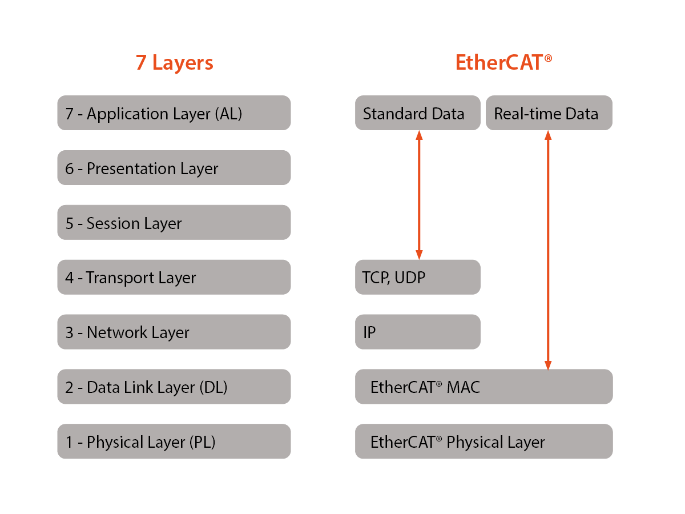
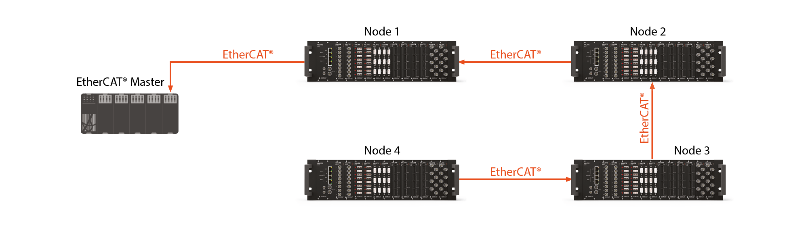

He Mingshan's
HomePage


EtherCAT Protocol
EtherCAT ( Ethernet for Control Automation Technology ) is an Ethernet-based fields system. The protocal is standardized in IEC 61158 and is suitable for both hard and soft real-time computing requirements in automation technology. The goal during development of EtherCAT was to apply Ethernet for automation applications requiring short data update times (also called cycle times) with low communication jitter (for precise synchronization purposes) and reduced hardware costs.
In this blog, I will talk about the EtherCAT protocol: what it is and what it does, with enough detail.
- How EtherCAT applies to real-time control and DAQ systems
- The key EtherCAT features and capabilities
- How EtherCAT differs from ethernet
1. Introduction
EtherCAT is a protocol that brings the power and flexibility of ethernet to the world of industrial automation, motion control, real-time control systems and data acquisition systems. But let's take a look at ethernet itself in order to understand its utility and popularity. This will put EtherCAT into context.
- How Data is Sent through Ethernet Protocol
Imagine hundreds of letters and boxes from the post office flowing down your street -- most of them are your neighbors, and a few of them are for you. But which ones? Well, the address printed on the face of each letter ensures that those with your address are automatically put into your mailbox.
Simple. right? It has worked like this for hundreds of years - long before computers.
But now imagine that each letter coming down the street has actually been cut up into thousands or even millions of tiny pieces, and each piece is just one word from inside that letter. Futhermore, these words are not necessarily in order. In fact, they are mixed together with billions of words from your neighbor's letters, too. Suddenly it's a lot more complicated.
But with ethernet, each "word"(datagram) contains the info that your mailbox needs in order to grab the words intended for it, and then to reassemble them perfectly into each unique piece of mail that was sent to you. So when you open your mailbox, the letters are perfectly reassembled, and they look just the way they did when they were mailed.
We don't need to get deeper into how ethernet exactly works, but it is important to understand the nature of this interface, and why it has become so ubiquitous today.
2. Why EtherCAT?
Why can't we simply use ethernet to interconnect and Control Systems? Ethernet is fast. It's inexpensive. And it's easy to implement in today's computer-based instruments. So what is missing? The answer lies mostly in determinism or time accuracy. The imaginary mailbox in our example above has all the time it needs to collect all of the datagrams from your letters and reassemble them into your mail.
On a day when only 100 letters came down your street, your mail would appear quickly in your mailbox. On heavy mail days, it would take longer, but the difference is irrelvant, right? The result is same: All of the letters are in your mailbox. So, ethernet is absolutely fine for sending documents around office or from one device to another.
But Control Systems are all about timing. it really does matter what time something happed and with as much time axis resolution and accuracy as possible. Factory automation control systems are by definition real-time systems. Turning machines on and off requires very low latency. You don't want your emergency shut-down messages should always get priority. But in a conventional ethernet system, there is no protocol for this. All data is essentially "equal". This works fine with your office computers sharing network bandwidth to access servers and printers, but not so well with real-time applications.
3. EtherCAT Physical Layers
EtherCAT uses the same physical and data link layers of ethernet, shown below:

The physical layer is the hardware that physically conveys the data across the network. This is the core electoral, i.e. "mechanical" level of the network. The data link layer is where the data is encoded into packets. The ethernet implementation here is fine, and EtherCAT uses it. But then the other layers well-known by ethernet users like the Network (IP) layer and Transport layer (TCP and UDP) are skipped completely by EtherCAT in the interest of cycle time.
This and other aspects of the protocol are how EtherCAT can reduce the 10ms cycle times of ethernet by several orders of magnitude. This yields an effective data rate of 100Mbps.
4. Ethernet and EtherCAT Network Topology Differences
The layers higher than the physical and data link layers are different between Ethernet and EtherCAT.
In a typical Ethernet network at your office or home, multiple devices are connected essentially at the same level. Any device can send data across the network, and any device can receive data. The network probably has a switch that connects it to an internet device that provides access to the outside world. This is very flexible but it prone to data overload when multiple devices send or request a large amount of data at the same time. Time-critical messages may be slowed down or even blocked in extreme circumstances.
EtherCAT, on the other hand, operates in a very different way. The EtherCAT Master Device is the only one allowed to transmit data across the network. The master sends a string of data across the bus, eliminating the data collisions of an ethernet system and optimizing speed as a result. EtherCAT frames are embedded within a standard Ethernet frame and are identified in the EtherType field by the value 0x88A4. The master is the only device in an EtherCAT segment that is allowed to send messages. The slaves can add data and send the frame along, but they can't create new messages on their own. These frames are received by the EtherCAT slave devices (nodes) that it is addressed to. The slave devices process data and add back whatever was requested by the master and send the frame along to the next node in the ring. The next node does exactly the same thing, taking in the data intended for it, putting the required data back into the EtherCAT frame, and sending it along to the next node.
Speed is increased from conventional ethernet not only because there is just one device sending data, but also because of a technique called "processing on the fly". In conventional ethernet, each device has to read the header of each message to determine if the data is intended for it, then ingest the data and process it in some way. But with processing on the fly, the node reads the header and sends the data along simultaneously, saving time and improving efficiency.
Finally, unlike conventional ethernet, EtherCAT allows incoming and outgoing data from more than one device on the network to be combined into single frames. This again optimizes speed. Interestingly, if a particular node does not have the processing power to handle the data, the bus speed can be adjusted by the master, ensuring that no data is lost by any device on the network.
5. EtherCAT Time-stamped Data
One of the most important aspects of EtherCAT is the distributed clock. Each node timestamps the data when it is received, and then stamps it again when it sends it on to the next node. So when the master receives back the data from the nodes, it can easily determine the latency of each node. Every data transmission from the master gets an I/O time-stamp from every node, making EtherCAT far more deterministic and accurate on the T axis than ethernet can be.
Even before the EtherCAT goes to work, however, the master sends out a broadcast to all of the slave nodes on the network, who latch it when thy receive it and when they send it back. The master will automatically do this as many times as necessary to reduce jitter and keep the slave nodes synchronized with each other.
This timing accuracy is extremely important in real-time control and factory automation applications. It further allows DAQ Systems such as the ones available from Dewesoft to be integrated so easily into control systems. EtherCAT's built-in distributed clock provides excellent "jitter" performance far smaller than one microsecond, which is equivalent to, without the need for additional hardware.
6. EtherCAT's Self-termination Means Fault Tolerance
If the last node's output is not connected to the master, the data are automatically returned inthe other direction via the EtherCAT protocol. Timestamping is maintained.

This fault tolerance means that EtherCAT networks do not have to be arranged in a ring-like the diagrams shown above, but can be configured in a variety of ways, including tree topology, ring topology, line topology, star topology, and even combinations. Of course, there has to be a path between the slaves and the master. If you literally unplug them, they can't work, but the point is that the topology of the network is highly flexible and tolerates faults to an exceptional degree.
Switches like you find in ethernet systems are not required by EtherCAT systems. Cable lengths up to 100 meters between nodes are possible. The LVDS (low-voltage differential signaling) on the twisted pair copper lines runs at high speeds and with very low power consumption. It is also possible to use fiber optic cables to increase speed and add galvanic isolation between devices.
7. Ethernet vs. EtherCAT
| Ethernet | EtherCAT | |
|---|---|---|
| Common Physical and Data Link Layers | Yes | Yes |
| International Standard | IEEE-802.3 | IEC 61158 |
| Determinisitic Timing | No | Yes |
| Master/Slave Operation | No | Yes |
| Ring-based Topology | Not Required | Yes |
| Optimized for real-time control | No | Yes |
| Optimized to avoid data collisions | No | Yes |
8. Measurement and Control EtherCAT Devices
With few exceptions, systems using EtherCAT are divided into two groups:
- Control
- Measurement